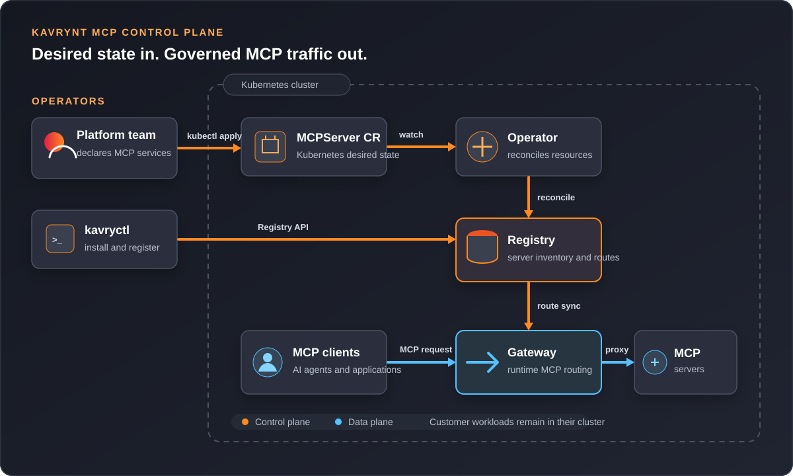

System Architecture¶
Kavrynt separates developer intent, control-plane metadata, Kubernetes reconciliation, and runtime traffic routing.
Logical View¶

The upper path manages desired state: platform engineers submit configuration
with kavryctl or Kubernetes MCPServer resources, the Operator reconciles
those resources, and Registry stores the resulting server inventory. The lower
path handles runtime traffic: Gateway synchronizes routes from Registry and
proxies MCP client requests to the selected MCP server workload.
Components¶
| Component | Role |
|---|---|
kavryctl |
CLI used by developers and platform engineers. |
| Registry | Stores MCP server records and exposes API operations. |
| Gateway | Loads route information and proxies MCP traffic. |
| Operator | Watches Kubernetes resources and syncs desired state. |
| Helm chart | Installs the control-plane components into Kubernetes. |
Control Plane¶
The control plane is responsible for metadata and desired state.
Registry is the central source of truth for server records. Operator reconciles
Kubernetes resources into Registry. kavryctl can also talk to Registry
directly for developer workflows.
Data Plane¶
Gateway is the first data-plane component. It gives AI clients a stable route to registered MCP servers.
In the MVP, Gateway is intentionally small. Later it can grow into policy enforcement, auth, traffic shaping, and audit points.
Kubernetes Boundary¶
Kavrynt runs inside a Kubernetes namespace:
kavrynt-system
Expected workloads:
kavrynt-registry
kavrynt-gateway
kavrynt-operator
Future Commercial Control Plane¶
The trial image install path runs in a user's cluster. Kavrynt Cloud can add hosted control services:
- Hosted registry
- Hosted control UI
- SSO and RBAC
- Audit logs
- Approval workflows
- Policy management
- Usage dashboard
- MCP capability catalog